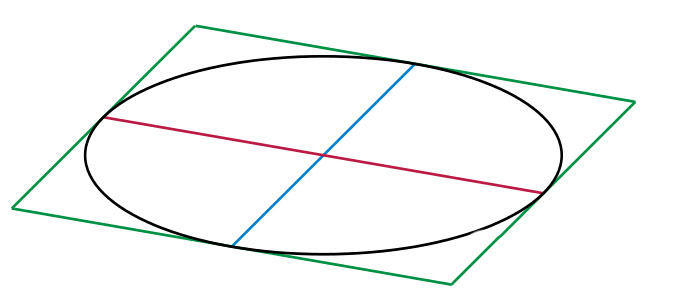
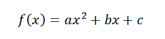

云英语
云英语：因学术而改变


【图为对应参数λ不同取值的泊松分布Poisson distributions】
所谓参数parameter，看前缀就知道是古希腊来的。para(旁侧副类)-meter(测量)。词源意思就是"辅助用的度量"（英语讲大约就是a subsidiary measure）。
文字可考的parameter最早出现在1630年代的现代拉丁文（就是牛顿他们写论文的那种拉丁文），用在几何学中。英语很快也借用，如The parameter of any diameter of ... is the focal chord which it bisects: thus the latus rectum is the parameter of the axis.翻译过来大约是，（圆锥曲线的）diameter的parameter是这个直径所等分的焦点弦：因此正交弦即是（圆锥曲线）轴的parameter。
神马？圆锥曲线还有直径？我数学已经忘光了好不好...这个呢，你可以参考以下图看看什么叫conjugate diameter（共轭直径），了解一下椭圆的外接平行四边形。或者，干脆直接忽略好了。
红线和蓝线就是这个椭圆的一对共轭直径conjugate diameter。至于parameter，你就理解成和这一对直径有关系（并且在旁边！）的另一个量度就好了！
还是说说大家熟悉的，中学没忘的。比如下面这个二次函数解析式
这个函数中，x是自变量independent variable，函数值取决于x的值。那么在x旁边的那些个a，b，c是什么呢？！
你猜对了，这些个旁边的abc这些量，就叫做parameter！
在上面函数所表示的每一个二次曲线中，abc都是常量constant；但是我们又可以给abc赋予不同的值来得到整个二次曲线家族！所以这个意义上，参数parameter又是可变的！
但不论怎样，参数abc帮助我们毫不费力以数学解析式的形式得到了整个的二次曲线家族。
下面再来看另外一个中学学过可能还没忘的。

这就是椭圆的参数方程parameteric equation，其中的t就是参数。而原本的椭圆方程是

可能是因为这个方程的形式不够简便，为了某种简便（谁还记得是为了什么简便？），我们在x和y以外引入了第三者t，用t作为x和y的量度——所谓的parameter。
好了，数学复习告一段落！现在我们可以来说说parameter在现代英语中到底是个什么东东？
parameter其实是一个可测量的反映某体系特征的因子，在评估或理解该体系时，参数parameter对我们很重要。可以说，没有parameter，我们就无从抓住这些系统的特征。而至于其精确定义，在数学，逻辑学，语言学和生态学等领域由其应用各有些许不同。
比如刚才的数学。不论在ax2+bx+c还是参数方程中，x或者x和y这些固有的自变量都不足以（或者不够简便实用）描述整个体系的特征，这时我们就需要其他的来表征系统特征的量――不论是前者的abc还是后者中的t。
这就被称作parameter参数――辅助我们（更好地）理解和评估某一系统的量。

【图为医用多参数监控仪multi-parameter monitor】
在工程上，一个发动机系统的参数包括气缸数目、气缸排列方式、气缸直径、活塞行程、压缩比、发动机排量以及规定的发火次序、配气相位等。这些parameter限定了某一发动机A和另一发动机B的区别。
在一个物理体系中，比如大气，那么它的温度、湿度、气压都是帮助我们评估该系统的度量，都是反映这个system特征的parameter。
所以更广义理解，一个人的身高体重腰围等也是参数。VB研修的时长，分段，研修方式，涵盖范围也是VB的参数。
所以广义来说，在一般的语境当中，parameter被当做characteristic的一个科学化替代来给文风增色。
虽然有传统的反对声音（你干嘛不用现成的characteristic），但是不排除有些人就是想用parameter（我想体现出更多的科学气氛！这样显得我很专业好不好！我写的东西bigger更高！）
最后，还要说一点，因为parameter（参数-特征）和perimeter（周长-边界-限制）的相似性，两者有混用的风险。
比如U.S. forces report that the parameters of the mine area in the Gulf are fairly well established中雷区的边界更适合用the perimeters of the mine area来表示。
但是话说回来，成为其特征的东西，也就是define了某系统的东西，自然也是其limit限制。所以parameter从参数特征可进一步指限制性因素或boundary边界。比如the parameters of science fiction是指科幻小说不能瞎写（否则就不是科幻小说而是抗日雷剧了。呵呵~）
加一句广告语。VB不是一门功利的课程，VB是一种生活态度！
版权所有 2011-2015 北京云英一语教育咨询有限公司 Y-English All Rights Reserved
地址：北京市海淀区五道口华清嘉园商务会馆802
电话：400-876-3898 010-82863898 82863899 传真：010-82863897